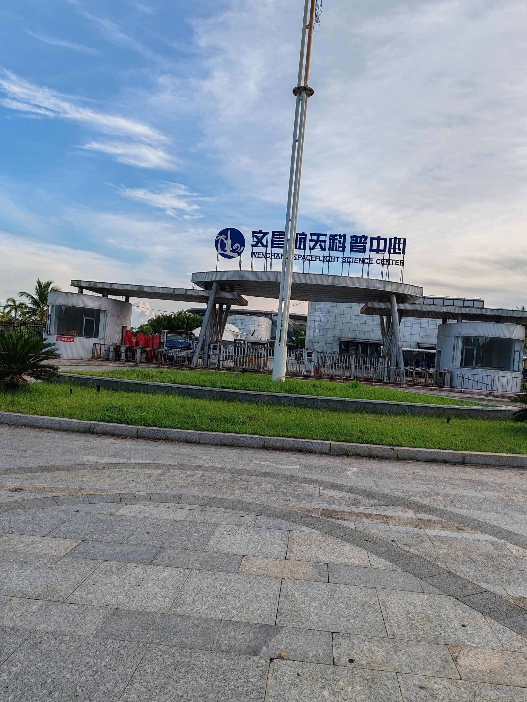
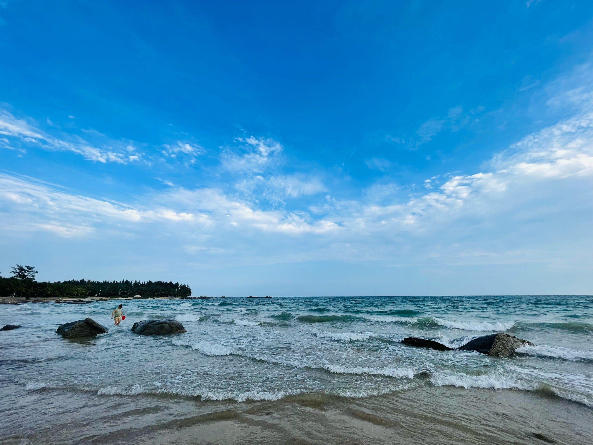
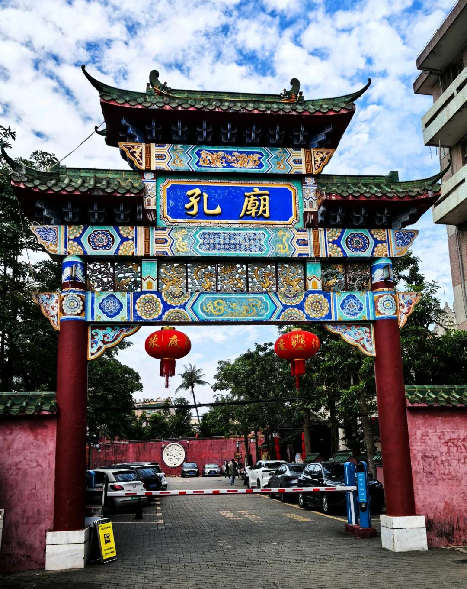
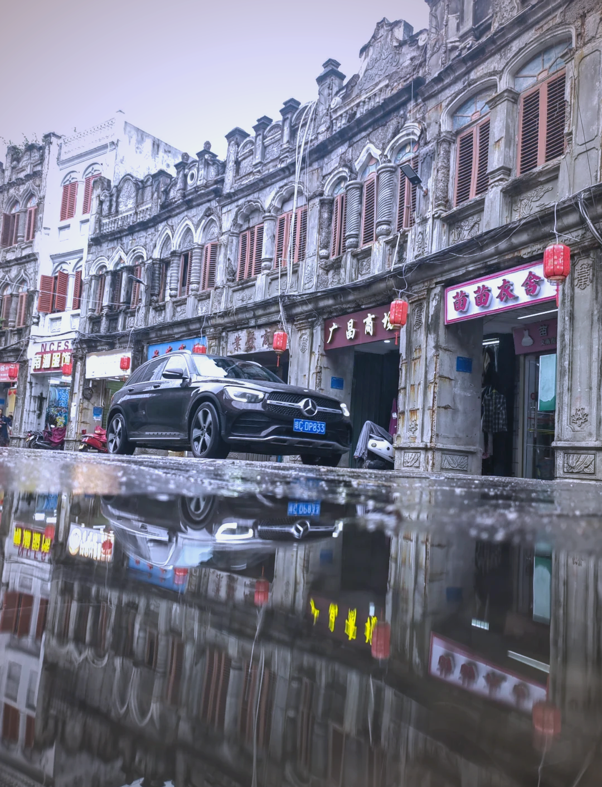
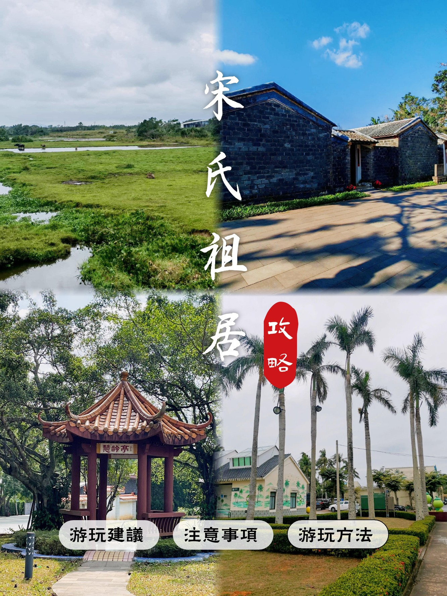
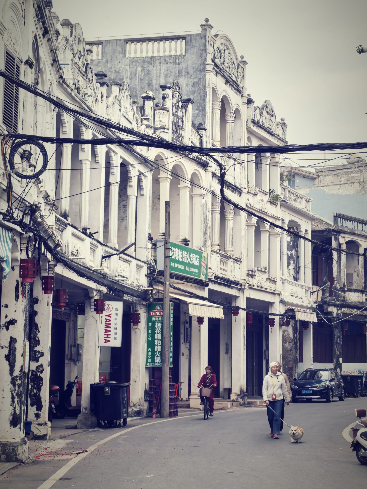
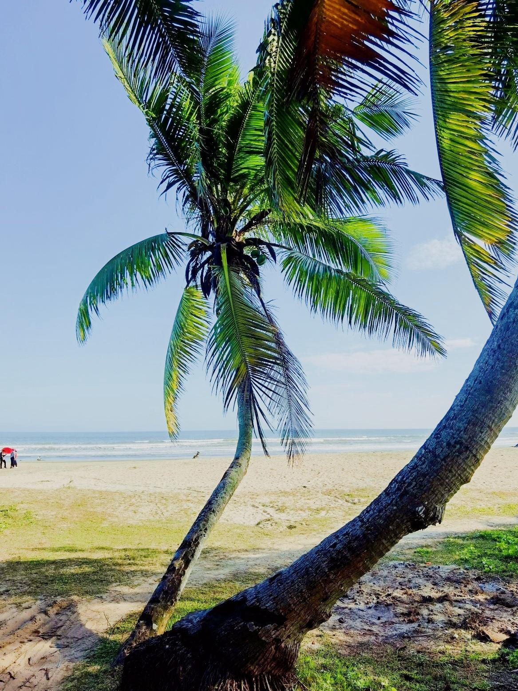

预算明细
🎫
门票
¥380
🍜
餐饮
¥1200
🚗
交通
¥600
🎮
娱乐
¥350
预计总花费
¥2530
行程地图
出发点
Day1
Day2
Day3
Day4
Day5
每日行程
Day 1
2026年5月1日 周五
⛅多云 25-31°C
🏠 出发路线 ▶
清澜 → 铜鼓岭（约40分钟）建议：自驾/打车
自驾/打车至铜鼓岭
从清澜出发，走S316省道向东北方向，经龙楼镇到铜鼓岭景区，车程约40分钟。建议租车自驾，文昌景点分散，租车最方便。
天气建议
今日多云（25-31°C），气温较高湿度大，务必做好防晒，携带充足饮用水。建议早出发避开午间高温。
09:002.5小时

⛰️ 铜鼓岭
📍 文昌市龙楼镇铜鼓岭景区
"琼东第一峰"，登顶俯瞰月亮湾绝美弧线海岸，观海长廊拍照超出片。门票50元+观光车40元
1 / 6
🚗 自驾 · 约10分钟
12:002小时
🪨 石头公园
📍 文昌市龙楼镇铜鼓岭山脚
海蚀地貌奇观，巨石林立海浪拍岸，《西游记》石猴出世取景地，免费开放。注意礁石湿滑穿防滑鞋
1 / 6
🚗 自驾 · 约5分钟
符记正宗文昌鸡老店
龙楼镇上的地道文昌鸡老字号，后院自养农家鸡，白切蘸沙姜汁，皮脆肉嫩，半只仅65元
📍 龙楼镇文铜路79号
人均 ¥60
本地老字号
🚗 自驾 · 约5分钟
15:002小时

🚀 文昌航天科普中心
📍 文昌市龙楼镇航天大道
中国首个滨海航天发射基地，参观火箭模型、VR模拟发射体验，航天主题科普。成人120元
需提前在公众号预约门票
1 / 6
🚗 自驾 · 约15分钟
淇水湾海滩 · 落日沙滩漫步
龙楼镇最美沙滩之一，柔软细腻的白沙滩，人少安静。傍晚踏浪看日落，感受热带海岛的浪漫
🍽️ 餐饮推荐
☀️ 早餐 · 建议9:00前
龙楼镇老爸茶早餐
海南传统老爸茶，配大包、虾饺、煎堆，慢悠悠吃顿地道早茶再出发
📍 龙楼镇龙兴街
人均 ¥15
🌞 午餐 · 建议12:00-13:00
符记正宗文昌鸡老店
文昌鸡必吃之选，白切文昌鸡皮爽肉滑，蘸海南辣酱绝配。到文昌第一餐就吃最正宗的
📍 龙楼镇文铜路79号
人均 ¥60
🌙 晚餐 · 建议18:00-19:00
龙福生美食城（海鲜）
龙楼镇人气海鲜大排档，新鲜龙楼四宝（海胆、鲍鱼、海白、龙虾），看完日落吃海鲜
📍 龙楼镇
人均 ¥80
Day 2
2026年5月2日 周六
🌦️多云有阵雨 25-31°C
🏠 出发路线 ▶
清澜 → 东郊椰林（约20分钟）建议：自驾
自驾至东郊椰林
从清澜出发沿椰林路向东南方向行驶约20分钟即达东郊椰林风景区。
天气建议
今日可能有阵雨（25-31°C），携带雨具。椰林中有遮荫，下雨也别有风味。如雨势大可调整为先去室内的椰子大观园。
09:003小时

🌴 东郊椰林
📍 文昌市东郊镇椰林路
海南最大椰林景区，27.8平方公里椰林，海南一半椰子产自这里。骑行椰林小道、海滩踏浪、吊床躺平，椰子3-5元一个超便宜
1 / 6
🚗 自驾 · 约5分钟
裕源中西茶园（老爸茶）
地图上找不到的隐藏老爸茶馆，当地人休闲聊天的地方，传统小吃品种多样，上午去最好，11点后基本卖完
📍 东郊椰林村子内
人均 ¥15
本地隐藏
🚗 自驾 · 约10分钟
12:302小时

🥥 椰子大观园
📍 文昌市文城镇文清大道502号
4A景区，千种椰树秘境，椰子迷宫、萌宠互动、椰子文化科普。成人50元

1 / 6
🚗 自驾 · 约15分钟
15:002.5小时

🏖️ 高隆湾
📍 文昌市清澜镇高隆湾
海南著名天然浴场，沙滩宽阔平坦干净，海水暖和海浪轻微，亲子戏水好去处，免费开放
1 / 6
🚗 自驾 · 约10分钟
清澜港夜市 · 海鲜烧烤夜宵
文昌最热闹的夜市，海鲜烧烤云集，吹海风逛吃。现点现做的海胆、龙虾、海白等龙楼四宝，配上清补凉收尾
🍽️ 餐饮推荐
☀️ 早餐 · 可以睡到9:30
裕源中西茶园（老爸茶）
东郊椰林村子里的老爸茶店，炒粉、猪脚饭、各式糕点，椰林中吃早茶超惬意
📍 东郊椰林村子内
人均 ¥15
🌞 午餐 · 建议12:30-13:30
瑞丰椰子鸡
新鲜椰青水打底，文昌鸡入锅涮煮，汤鲜肉嫩，椰香四溢。来海南必吃椰子鸡
📍 东郊椰林风景区
人均 ¥70
🌙 晚餐 · 建议18:30
清澜港夜市海鲜烧烤
夜市现选现烤，海胆、生蚝、海白、烤龙虾应有尽有，配一碗清补凉收尾。吹着海风逛吃是文昌夜生活标配
📍 清澜港夜市
人均 ¥80
Day 3
2026年5月3日 周日
🌦️多云有阵雨 26-31°C
🏠 出发路线 ▶
清澜 → 文昌孔庙（约10分钟）建议：自驾/打车
自驾至文昌孔庙
从清澜出发至文城镇文昌孔庙，车程约10分钟。今天的行程集中在文城镇市区，可以步行+打车穿梭。
天气建议
今日多云有阵雨（26-31°C），携带雨具。孔庙和老街均在市区，距离近方便避雨。下午去宋氏祖居需提前查看天气。
09:001.5小时

🏛️ 文昌孔庙
📍 文城镇文东里20号
海南省保存最完整的古建筑群，"海南第一庙"。红墙青瓦绿树，安静庄严，人文气息浓厚
1 / 6
🚶 步行 · 约10分钟
11:002小时

🏮 文南老街
📍 文昌市文南路
海南第三大骑楼老街，兴建于1920年代，中西合璧南洋风格建筑。美食云集：文昌鸡、抱罗粉、清补凉
1 / 6
🚶 步行 · 约5分钟
迈号咖啡文化产业园
南洋复古风咖啡馆，藤编座椅与吊灯，陈列百年华侨老物件。品尝文昌特有的利比里卡大粒种咖啡，果浆厚风味足
📍 文昌迈号镇
人均 ¥30
百年咖啡文化
🚗 自驾 · 约30分钟
14:301.5小时

🏡 宋氏祖居
📍 文昌市昌洒镇古路园村
宋庆龄家族祖居，庭院式古建筑，陈列珍贵历史照片和文物，门票15元
1 / 6
🚗 自驾 · 约20分钟
重兴斑兰农庄
椰林下的南洋风味农庄，品尝斑兰红茶和千层糕。斑兰是华侨从东南亚带回的"东方香草"，清香宜人
📍 重兴镇
人均 ¥35
南洋味道
🚗 自驾 · 约25分钟
文南老街夜景 · 骑楼南洋夜色
夜幕下的骑楼灯笼映椰影，南洋风情拉满。漫步百年老街，品尝夜市小吃，感受文昌最地道的市井烟火气
🍽️ 餐饮推荐
☀️ 早餐 · 可以睡到9:00
文南老街抱罗粉
海南四大名粉之一，汤清味鲜，粉条滑爽，加牛肉干和花生酱是标配吃法。早起一碗粉开启人文之旅
📍 文南老街内
人均 ¥15
🌞 午餐 · 建议12:00-13:00
阿侬盐焗鸡
海南非遗盐焗鸡，整只鸡用粗海盐焗制，外皮金黄酥香，肉质鲜嫩多汁，配白米饭一绝
📍 渔港路059号
人均 ¥40
🌙 晚餐 · 建议19:00
迈号咖啡+斑兰糕配海南粉
逛完文南老街夜景后来份轻食，品迈号利比里卡咖啡配重兴斑兰千层糕，再来碗海南腌粉做夜宵
📍 迈号咖啡文化产业园 / 文南老街
人均 ¥35
Day 4
2026年5月4日 周一
⛅多云 26-31°C
🏠 出发路线 ▶
清澜 → 铺前古镇（约50分钟）建议：自驾
自驾至铺前古镇
从清澜出发经海文大桥方向至铺前镇，车程约50分钟。铺前镇距海口很近，可走海文大桥。
天气建议
今日多云（26-31°C），天气不错适合户外。铺前古镇游览约2小时，下午去冯家湾玩水，注意防晒。
09:302小时

🏘️ 铺前古镇
📍 文昌市铺前镇
海南四大古镇之一，保留大量南洋骑楼建筑，比海口老街更淳朴。下午4点渔港有渔船回港，可买新鲜海鲜
1 / 6
🚶 步行 · 约5分钟
铺前糟粕醋
铺前镇传统名小吃，糟粕醋发源地！酸辣开胃的醋汤配海鲜，曾上过《沸腾吧火锅》纪录片，来文昌必吃
📍 铺前老街小摊
人均 ¥25
非遗美食
🚗 自驾 · 约40分钟
13:002.5小时

🌊 冯家湾
📍 文昌市会文镇冯家湾
"玻璃海"小众秘境，人少景美，清澈海水能见度极高。森系出片圣地，网红打卡同款机位
1 / 6
🚗 自驾 · 约15分钟
16:001.5小时

🥥 春光椰子王国
📍 文昌市龙楼镇S316
椰子文化主题园区，参观椰子加工生产线，DIY椰子手工艺品，品尝各种椰子美食，免费开放
1 / 6
🚗 自驾 · 约30分钟
环球码头海鲜市场 · 淘海鲜大餐
文昌最大海鲜市场，自选新鲜海鲜拿去餐厅加工。生蚝2元/个、海胆8元/个、小石斑20元/条，比三亚便宜一半
🍽️ 餐饮推荐
☀️ 早餐 · 可以睡到9:30
铺前糟粕醋早餐
铺前非遗美食，酸辣开胃的糟粕醋配海鲜杂烩，上过《沸腾吧火锅》。早上来一碗酸爽醒神，适合前一晚吃撑的胃
📍 铺前老街小摊
人均 ¥25
🌞 午餐 · 建议12:30
铺前马鲛鱼饭
铺前渔港特产马鲛鱼，煎到两面金黄，外焦里嫩，配白米饭和一碟酱油辣椒，渔民风味满分
📍 铺前镇渔港路
人均 ¥45
🌙 晚餐 · 建议17:30
环球码头海鲜加工
文昌最大海鲜市场自选海鲜+餐厅加工，生蚝2元/个、海胆8元/个、小石斑20元/条，比三亚便宜一半。今天重头戏
📍 清澜环球码头
人均 ¥100
Day 5
2026年5月5日 周二
⛅多云 25-31°C
🏠 出发路线 ▶
清澜 → 符家宅（约15分钟）建议：自驾
自驾至符家宅
最后一天轻松行程，上午逛文昌市区周边小众景点，下午悠闲收尾准备返程。
天气建议
今日多云（25-31°C），最后一天天气不错。上午行程较轻松，下午可以去码头老爸茶，悠闲告别文昌。
09:301小时
🌅 高隆湾晨间漫步
📍 文昌市清澜镇高隆湾
最后一天清晨去高隆湾散步，看海上日出，在沙滩上留下文昌的最后记忆
1 / 6
🚗 自驾 · 约20分钟
符家宅
南洋风格民居院落，中国传统+伊斯兰元素建筑。已无人居住，层叠通透的拱门超有氛围感，穿越百年的废墟美学
📍 文昌市头苑镇
免费开放
百年建筑
🚗 自驾 · 约15分钟
11:302小时
🍲 恒味椰奶鸡
📍 东郊椰林风景区
告别文昌的必吃一餐！用椰奶煮文昌鸡，鸡肉嫩滑Q弹，汤汁椰香浓郁，不蘸酱料已令人回味无穷
1 / 6
🚗 自驾 · 约15分钟
码头老爸茶
清澜港旁的老爸茶馆，体验海南人最地道的慢生活方式。一壶茶配各式小点心，坐看渔船进出港口
📍 清澜港附近
人均 ¥20
海南慢生活
🚗 自驾 · 约10分钟
椰子伴手礼采购 · 满载而归
春光食品、南国食品等文昌本地椰子特产店，椰子糖、椰子糕、椰子粉、椰子油应有尽有，价格比其他地方便宜
🍽️ 餐饮推荐
☀️ 早餐 · 最后一天睡到自然醒
码头老爸茶
清澜港附近的老爸茶店，海南人最地道的慢生活方式。大包、糕点、奶茶，坐看渔船进出，悠闲告别文昌
📍 清澜港附近
人均 ¥20
🌞 午餐 · 建议11:30（告别餐）
恒味椰奶鸡
东郊椰林招牌菜，鲜椰奶炖文昌鸡，奶白浓汤配嫩滑鸡肉。告别文昌的必吃一餐，吃完心满意足回程
📍 东郊椰林风景区
人均 ¥70
🌙 下午茶/路上吃 · 返程前
椰青冻+清补凉
买几个椰青冻和清补凉路上喝，海南特色甜品。文南老街还能带走椰子糖、椰子脆片等伴手礼
📍 文南老街 / 文城镇超市
人均 ¥20
预约提醒清单
避坑指南
- 文昌景点分散，强烈建议租车自驾，市内租车约150-200元/天
- 五月是文昌雨季初期，随身携带雨具，每日可能有阵雨
- 石头公园礁石湿滑务必穿防滑鞋，切勿在浪大时靠近海边
- 航天发射中心提前预约门票，五一期间可能限流
- 海鲜消费提前问价，环球码头自选海鲜时注意称重
- 文昌鸡认准本地老字号（符记、力哥等），避免景区高价店
- 椰子大观园下午3点后椰子加工体验可能结束，建议上午去
- 铺前糟粕醋可要求减辣减盐，外地游客可能不习惯酸辣口味
- 五月气温25-31°C，注意防晒防暑，随身携带饮用水
- 东郊椰林椰子3-5元/个，景区外买更便宜，不要被高价忽悠